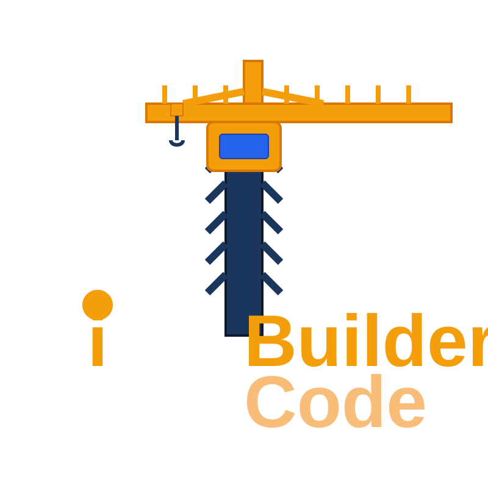

iBuilder Code is a collection of tools and resources developed by Matt Emma to assist in various coding tasks and projects.
The documentation for each tool can be found in their respective GitHub repositories linked on the home page.